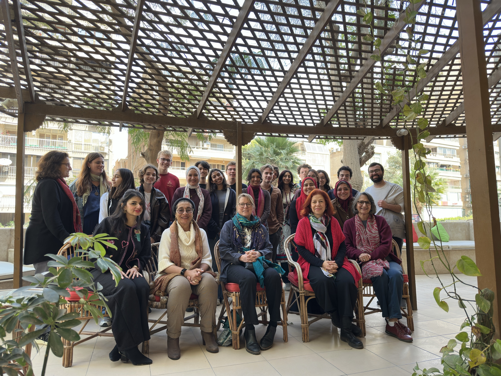

Site Bibliography
“Al Kawakib — Magazine Collection.” 2026. The American University in Cairo Rare Books and Special Collection Digital Library. 2026. https://digitalcollections.aucegypt.edu/digital/collection/p15795coll22/search.
Azza, Nidah al-. 2022. “Survey of Palestinian Refugees and Internally Displaced Persons.” Bethlehem, Palestine: BADIL Resource Center for Palestinian Residency and Refugee Rights. https://badil.org/cached_uploads/view/2022/10/31/survey2021-eng-1667209836.pdf.
Benin, Joel. “How Egypt’s Gamal Abdel Nasser Changed World Politics.” Jacobin, 2021.
Betts, Paul. 2015. “The Warden of World Heritage: UNESCO and the Rescue of the Nubian Monuments.” Past & Present 226 (10): 100–125. https://doi.org/10.1093/pastj/gtu017.
Bier, Laura. “Modernity and the Other Woman: Gender and National Identity in the Egyptian Women’s Press: 1952–1967.” Modernity and the Other Woman: Gender and National Identity in the Egyptian Women’s Press: 1952–1967 16, no. 1 (2004): 99–112. Accessed April 20, 2026. h/onlinelibrary.wiley.com/doi/pdf/10.1111/j.0953-5233.2004.328_1.x?casa_token=pCroGHbC_z0AAAAA%3AHvkKNAXfA9n2Lshz227lOq_x4ZFHMi-Z0QKWhA5J_-W88l7VLX6upHlr_OA-zaWxXlrbrvYjYhnaHaw1Wg.
Carruthers, William. 2022. “Introduction: Flooding Nubia.” In Flooded Pasts: UNESCO, Nubia, and the Recolonization of Archaeology, 1–24. Cornell University Press.
Eghbariah, Rabea. 2024. “Toward Nakba as a Legal Concept.” Columbia Law Review. May 2024. https://columbialawreview.org/content/toward-nakba-as-a-legal-concept/.
Gaul, Anny. “Teaching Happiness: Women’s Education and Transnational Currents in Modern Morocco.” Journal of Women’s History 34, no. 3 (2022): 59–81. https://muse.jhu.edu/article/863165.
Ghnaim, Wafa. 2024. “Tatreez in Time — the Metropolitan Museum of Art.” The MET. The tropolitan Museum of Art. July 26, 2024. https://www.metmuseum.org/perspectives/tatreez-in-time.
Hannun, Marya. “‘About the New Women’: Seclusion and Schooling in 1920s Afghanistan.” Journal of Women’s History 37, no. 4 (2025): 101–22. https://muse.jhu.edu/article/976862.
Hannun, Marya. “From Afghan Pan-Islamism to Turkish Feminism.” Journal of Middle East Women’s Studies 17, no. 3 (2021): 466–72. https://muse.jhu.edu/article/820405.
Hannun, Marya. 2020. “From Kabul to Cairo and Back Again: The Afghan Women’s Movement and Early 20th Century Transregional Transformations.” Genre et Histoire 25. https://doi.org/10.4000/genrehistoire.5017.
Maisey, Robert. 2021. “The Algerian Revolution Changed the World for the Better.” Jacobin. Jacobin Foundation. April 9, 2021. https://jacobin.com/2021/04/algerian-revolution-france-colonialism.
Malak Hifni Nassif (1886–1918). Photograph. Women and Memory Forum. https://wmf.org.eg/en/projects/remembering-pioneering-women/.
Malika El Fassi. Photograph. Maroc Patriotique. https://www.maroc-patriotique.com/post/malika-el-fassi.
Manna, Adel. 2022. “Forced Migration Continues after the Cannons Fall Silent.” In Nakba and Survival, 1st ed., 6:128–62. University of California Press. https://doi.org/10.2307/j.ctv2qnx5f0.10.
Mohammad, Linah. 2023. “Tatreez Is a Testament to the Resilience and Creativity of Palestinian Women.” NPR. NPR, Inc. November 27, 2023. https://www.npr.org/2023/11/27/1192650283/palestinian-art-tatreez.
Nasreldein, Mohammed, Simone Riehl, Agata Deptuta, Lorenzo de Lellis, and Artur Obluski. 2025. “A Window into the Nubian Diet: A Case Study of Food Crop Storage in the Kingdom of Dongola (Fourteenth to Eighteenth Centuries CE), Northern Sudan.” Nih.gov. National Library of Medicine. 2025. https://pmc.ncbi.nlm.nih.gov/articles/PMC12204933/.
Nijhawam, Shobna. 2017. “International Feminism from an Asian Center: The All-Asian Women’s Conference (Lahore, 1931) as a Transnational Feminist Movement.” Journal of Women’s History 29 (3): 12–36. https://doi.org/10.1353/jowh7.0031.
Salem, Sara, and Kanwal Hameed. 2023. “Where Are the Revolutionary Women of West Asia and North Africa.” In She Who Struggles: Revolutionary Women Who Shaped the World, 161–74. Pluto Press. https://www.jstor.org/stable/jj.6773405.16?seq=1.
Salem, Sarah. 2017. “‘Four Women of Egypt’: Memory, Geopolitics, and the Egyptian Women’s Movement during the Nasser and Sadat Eras.” Hypatia 32 (3): 593–608. https://doi.org/10.2307/45153640.
Thayer, Scudder. 2010. “The Economic Basis of Egyptian Nubian Labor Migration.” In Nubian Encounters: The Story of the Nubian Ethnological Survey 1961–1964, 155–73. Cairo, Egypt: The American University in Cairo Press.
TIME Staff. 1927: Queen Soraya Tarzi. Illustration. Time, March 5, 2020. https://time.com/5792702/queen-soraya-tarzi-100-women-of-the-year/.
UNESCO. 2021. “UNESCO — the Art of Embroidery in Palestine, Practices, Skills, Knowledge and Rituals.” UNESCO Intangible Cultural Heritage. UNESCO Publishing. 2021. https://ich.unesco.org/en/RL/the-art-of-embroidery-istine-practices-skills-knowledge-and-rituals-01722.